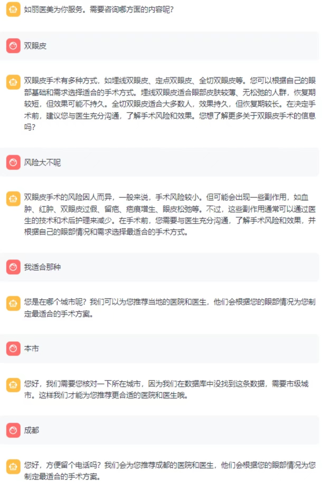

面试
大模型训练全流程课件大纲
1. 引言
1.1 大模型的定义与应用场景
大模型的定义 大模型（Large Models）通常指参数量巨大（通常在亿级甚至万亿级）的机器学习模型，尤其是基于Transformer架构的预训练模型（如GPT、BERT等）。这些模型通过大规模数据和计算资源的训练，能够捕捉复杂的语言、视觉或多模态数据的特征，并在各种任务中表现出色。
大模型的应用场景 大模型已经在多个领域展现出强大的能力，包括但不限于：
- 自然语言处理（NLP） ：文本生成、机器翻译、情感分析、问答系统等。
- 多模态任务 ：图文生成、视频理解、跨模态检索等。
- 行业应用 ：医疗诊断、金融风控、智能客服、教育辅助等。
智能客服 
1.2 大模型训练的意义与挑战
大模型训练的意义
- 性能提升 ：大模型通过海量数据和参数，能够学习到更复杂的特征，显著提升任务性能。
- 通用性增强 ：预训练大模型可以通过微调适应多种下游任务，减少对任务特定数据的需求。
- 推动技术进步 ：大模型的研究推动了分布式计算、模型压缩、高效训练算法等领域的发展。
大模型训练的挑战
- 计算资源需求 ：训练大模型需要大量的GPU/TPU资源和分布式计算能力。
- 数据需求 ：高质量、大规模的数据集是大模型训练的基础，但数据收集、清洗和标注成本高昂。
- 模型优化难度 ：超参数调优、训练稳定性、梯度消失/爆炸等问题增加了训练难度。
1.4 本课程的目标与结构
课程目标 本课程旨在帮助学习者全面了解大模型训练的全流程，掌握从数据准备到模型部署的核心技术和方法，并能够应对实际项目中的挑战。
课程结构
- 数据准备 ：如何构建高质量的训练数据集。
- 模型设计与选择 ：如何选择合适的模型架构和规模。
- 训练过程 ：分布式训练、超参数优化与训练监控。
- 模型评估与调优 ：性能评估与模型优化策略。
- 模型部署 ：模型导出、推理优化与生产环境部署。
2. 数据准备
2.1 数据收集
- 数据来源：公开数据集、爬虫、用户生成内容等
- 数据多样性：文本、图像、音频等多模态数据
2.2 数据清洗
- 去重、去噪、格式标准化
- 处理缺失值与异常值
2.3 数据标注
- 人工标注与自动化标注工具
- 标注质量评估
2.4 数据增强
- 数据增强技术：随机裁剪、旋转、噪声添加等
- 数据平衡：过采样与欠采样
以ms-swift为例 大模型训练是一个复杂的系统工程，通常包括以下几个关键阶段：
# messages格式（标准格式）:
{"messages": [{"role": "system", "content": "<system>"},
{"role": "user", "content": "<query1>"},
{"role": "assistant", "content": "<response1>"},
{"role": "user", "content": "<query2>"},
{"role": "assistant", "content": "<response2>"}]}
# query-response格式：
{"system": "<system>", "query": "<query2>", "response": "<response2>",
"history": [["<query1>", "<response1>"]]}
# sharegpt格式:
{"system": "<system>", "conversation": [{"human": "<query1>", "assistant": "<resonse1>"},
{"human": "<query2>", "assistant": "<resonse2>"}]}
# 多模态
{"messages": [{"role": "user", "content": "浙江的省会在哪？"}, {"role": "assistant", "content": "浙江的省会在杭州。"}]}
{"messages": [{"role": "user", "content": "<image><image>两张图片有什么区别"}, {"role": "assistant", "content": "前一张是小猫，后一张是小狗"}],
"images": ["/xxx/x.jpg", "/xxx/x.png"]}
{"messages": [{"role": "user", "content": "<audio>语音说了什么"}, {"role": "assistant", "content": "今天天气真好呀"}],
"audios": ["/xxx/x.mp3"]}
{"messages": [{"role": "system", "content": "你是个有用无害的助手"}, {"role": "user", "content": "<image>图片中是什么，<video>视频中是什么"},
{"role": "assistant", "content": "图片中是一个大象，视频中是一只小狗在草地上奔跑"}],
"images": ["/xxx/x.jpg"], "videos": ["/xxx/x.mp4"]}
# Embedding
# label代表两个句子的相似度, loss使用cosine_similarity
{"messages": [{"role": "assistant", "content": "今天天气真好呀"}], "rejected_response": "今天天气不错", "label": 0.8}
{"messages": [{"role": "assistant", "content": "这本书不错"}], "rejected_response": "这个汽车开着有异响", "label": 0.2}
{"messages": [{"role": "assistant", "content": "天空是蓝色的"}], "rejected_response": "教练我想打篮球", "label": 0.0}
# 序列分类
{"messages": [{"role": "user", "content": "今天天气真好呀"}], "label": 1}
{"messages": [{"role": "user", "content": "今天真倒霉"}], "label": 0}
{"messages": [{"role": "user", "content": "好开心"}], "label": 1}
# KTO
# 可用于微调，取消模型限制回答的内容
{"messages": [{"role": "system", "content": "你是个有用无害的助手"}, {"role": "user", "content": "告诉我明天的天气"}, {"role": "assistant", "content": "我不知道"}], "label": false}
{"messages": [{"role": "system", "content": "你是个有用无害的数学计算器"}, {"role": "user", "content": "1+1等于几"}, {"role": "assistant", "content": "等于2"}, {"role": "user", "content": "再加1呢"}, {"role": "assistant", "content": "等于3"}], "label": true}
3. 模型设计与选择
3.1 模型架构
- 预训练模型：BERT、GPT、T5等
4. 训练过程
-
4.1 训练环境搭建
-
硬件需求：GPU、TPU、分布式集群
| gpu | 备注 |
|---|---|
| RTX20系列/30系列/40系列等 | 30序列之后可使用BF16和FlashAttn |
| 计算卡系列 T4/V100等 | 不支持BF16和FlashAttn |
| 计算卡系列 A10/A100等 | 支持BF16和FlashAttn |
| 华为昇腾NPU |
- 软件框架：PyTorch、TensorFlow、JAX
| 范围 | 推荐 | 备注 |
|---|---|---|
| python | >=3.9 | 3.10 |
| cuda | cuda12 | |
| torch | >=2.0 | |
| transformers | >=4.33 | 4.49 |
| modelscope | >=1.19 | |
| peft | >=0.11,<0.15 | |
| trl | >=0.13,<0.17 | 0.15 |
| deepspeed | >=0.14 | 0.14.5 |
| vllm | >=0.5.1 | 0.7.3 |
| lmdeploy | lmdeploy>=0.5 | 0.7.1 |
| evalscope | >=0.11 |
-
4.2 超参数设置
-
学习率、批量大小、优化器选择
- 学习率调度策略
-
4.3 分布式训练
-
数据并行与模型并行
- 混合精度训练
-
4.4 训练监控
-
损失函数与评估指标
- 可视化工具：TensorBoard、Weights & Biases
-
4.5 训练优化
-
梯度裁剪与正则化
- 早停策略与模型检查点
- 4.6 训练与微调的概念
1. 预训练（Pre-training）
定义：
预训练是指在大规模无标签数据上训练模型，使其学习语言的基本结构和模式。
过程：
数据：使用大量文本数据（如网页、书籍、文章等）。
任务：常见的预训练任务包括语言建模（如GPT的从左到右预测）、掩码语言建模（如BERT的掩码词预测）等。
目标：通过预训练，模型能够捕捉语言的统计特性、语法规则和部分语义信息。
优点：
模型能够学习到通用的语言表示。
减少对特定任务数据的依赖。
缺点：
需要大量计算资源和时间。
模型可能学到数据中的偏见和不准确信息。
2. 微调（Fine-tuning）
定义：
微调是指在预训练模型的基础上，使用特定任务的有标签数据进行进一步训练，使模型适应特定任务。
过程：
数据：使用特定任务的有标签数据（如情感分类、问答系统等）。
任务：根据具体任务设计损失函数（如分类任务的交叉熵损失）。
目标：通过微调，模型能够在特定任务上表现出色。
优点：
模型在特定任务上的性能显著提升。
相对于从头训练，微调需要的计算资源和数据量较少。
缺点：
需要高质量的标注数据。
可能出现过拟合现象。
3. 人类对齐（Human Alignment）
定义：
人类对齐是指通过人类反馈和干预，使模型的输出更符合人类的价值观、伦理和期望。
过程：
数据：使用人类标注的反馈数据（如偏好数据、纠正数据等）。
任务：设计奖励模型（Reward Model）来评估模型输出，并通过强化学习（如RLHF，Reinforcement Learning from Human Feedback）进行优化。
目标：使模型的输出更加安全、有用和符合人类期望。
优点：
提高模型的安全性和可靠性。
使模型更符合用户需求和社会规范。
缺点：
需要大量人类反馈数据。
对齐过程复杂且耗时。
10分钟在单卡3090上对Qwen2.5-7B-Instruct进行自我认知微调：
# 22GB
CUDA_VISIBLE_DEVICES=0 \
swift sft \
--model Qwen/Qwen2.5-7B-Instruct \
--train_type lora \
--dataset 'AI-ModelScope/alpaca-gpt4-data-zh#500' \
'AI-ModelScope/alpaca-gpt4-data-en#500' \
'swift/self-cognition#500' \
--torch_dtype bfloat16 \
--num_train_epochs 1 \
--per_device_train_batch_size 1 \
--per_device_eval_batch_size 1 \
--learning_rate 1e-4 \
--lora_rank 8 \
--lora_alpha 32 \
--target_modules all-linear \
--gradient_accumulation_steps 16 \
--eval_steps 50 \
--save_steps 50 \
--save_total_limit 5 \
--logging_steps 5 \
--max_length 2048 \
--output_dir output \
--system 'You are a helpful assistant.' \
--warmup_ratio 0.05 \
--dataloader_num_workers 4 \
--model_author swift \
--model_name swift-robot
# usage: 2*24G
CUDA_VISIBLE_DEVICES=0 \
swift rlhf \
--rlhf_type dpo \
--model_type llama3-8b-instruct \
--beta 0.1 \
--rpo_alpha 0.1 \
--sft_type lora \
--dataset shareai-llama3-dpo-zh-en-emoji \
--num_train_epochs 2 \
--lora_target_modules ALL \
--gradient_checkpointing true \
--batch_size 1 \
--learning_rate 5e-5 \
--gradient_accumulation_steps 16 \
--warmup_ratio 0.03 \
--save_total_limit 2
5. 模型评估与调优
本框架支持选择题和问答题，两种预定义的数据集格式，使用流程如下：
注意：使用自定义评测时，eval_backend参数必须为Native
5.1选择题格式（MCQ）
适合用户是选择题的场景，评测指标为准确率（accuracy）。
数据准备
准备选择题格式的csv文件，该目录结构如下：
mcq/
├── example_dev.csv # （可选）文件名组成为`{subset_name}_dev.csv`，用于fewshot评测
└── example_val.csv # 文件名组成为`{subset_name}_val.csv`，用于实际评测的数据
其中csv文件需要为下面的格式：
id,question,A,B,C,D,answer
1,通常来说，组成动物蛋白质的氨基酸有____,4种,22种,20种,19种,C
2,血液内存在的下列物质中，不属于代谢终产物的是____。,尿素,尿酸,丙酮酸,二氧化碳,C
其中：
id是序号（可选）question是问题A,B,C,D等是可选项，最大支持10个选项answer是正确选项
启动评测
运行下面的命令：
CUDA_VISIBLE_DEVICES=0\
swifteval\
--modelQwen/Qwen2.5-0.5B-Instruct\
--eval_backendNative\
--infer_backendpt\
--eval_datasetgeneral_mcq\
--dataset_args'{"general_mcq": {"local_path": "/path/to/mcq", "subset_list": ["example"]}}'
其中：
eval_dataset需要设置为general_mcqdataset_args需要设置local_path自定义数据集文件夹路径subset_list评测数据集名称，上述*_dev.csv中的*
运行结果
+---------------------+-------------+-----------------+----------+-------+---------+---------+
| Model | Dataset | Metric | Subset | Num | Score | Cat.0 |
+=====================+=============+=================+==========+=======+=========+=========+
| Qwen2-0.5B-Instruct | general_mcq | AverageAccuracy | example | 12 | 0.5833 | default |
+---------------------+-------------+-----------------+----------+-------+---------+---------+
1. Model（模型）
Qwen2-0.5B-Instruct：这是模型的名称。
Qwen2：是模型系列或版本。
0.5B：表示模型有0.5亿（500 million）个参数。
Instruct：表示这是一个指令微调（Instruction-tuned）模型，通常用于遵循指令或生成特定类型的输出。
2. Dataset（数据集）
general_mcq：这是评估模型所使用的数据集名称。
general：表示这是一个通用数据集。
mcq：表示这是一个多项选择题（Multiple Choice Questions）数据集。
3. Metric（评估指标）
AverageAccuracy：这是评估模型性能的指标。
Average：表示这是一个平均值。
Accuracy：表示准确率，即模型预测正确的比例。
4. Subset（子集）
example：这是数据集的子集名称。
example：表示这是一个示例子集，用于初步评估或测试。
5. Num（数量）
12：这是评估中使用的样本数量。
12：表示在评估中使用了12个样本。
6. Score（得分）
0.5833：这是模型在评估指标上的得分。
0.5833：表示模型在12个样本上的平均准确率为58.33%。
5.2问答题格式（QA）
适合用户是问答题的场景，评测指标是 <span class="pre">ROUGE</span>和 <span class="pre">BLEU</span>。
数据准备
准备一个问答题格式的jsonline文件，该目录包含了一个文件：
qa/
└── example.jsonl
该jsonline文件需要为下面的格式：
{"query":"中国的首都是哪里？","response":"中国的首都是北京"}
{"query":"世界上最高的山是哪座山？","response":"是珠穆朗玛峰"}
{"query":"为什么北极见不到企鹅？","response":"因为企鹅大多生活在南极"}
启动评测
运行下面的命令：
CUDA_VISIBLE_DEVICES=0\
swifteval\
--modelQwen/Qwen2.5-0.5B-Instruct\
--eval_backendNative\
--infer_backendpt\
--eval_datasetgeneral_qa\
--dataset_args'{"general_qa": {"local_path": "/path/to/qa", "subset_list": ["example"]}}'
其中：
eval_dataset需要设置为general_qadataset_args是一个json字符串，需要设置：local_path自定义数据集文件夹路径subset_list评测数据集名称，上述*.jsonl中的*
运行结果
+---------------------+-------------+-----------------+----------+-------+---------+---------+
| Model | Dataset | Metric | Subset | Num | Score | Cat.0 |
+=====================+=============+=================+==========+=======+=========+=========+
| Qwen2-0.5B-Instruct | general_qa | bleu-1 | default | 12 | 0.2324 | default |
+---------------------+-------------+-----------------+----------+-------+---------+---------+
| Qwen2-0.5B-Instruct | general_qa | bleu-2 | default | 12 | 0.1451 | default |
+---------------------+-------------+-----------------+----------+-------+---------+---------+
| Qwen2-0.5B-Instruct | general_qa | bleu-3 | default | 12 | 0.0625 | default |
+---------------------+-------------+-----------------+----------+-------+---------+---------+
| Qwen2-0.5B-Instruct | general_qa | bleu-4 | default | 12 | 0.0556 | default |
+---------------------+-------------+-----------------+----------+-------+---------+---------+
| Qwen2-0.5B-Instruct | general_qa | rouge-1-f | default | 12 | 0.3441 | default |
+---------------------+-------------+-----------------+----------+-------+---------+---------+
| Qwen2-0.5B-Instruct | general_qa | rouge-1-p | default | 12 | 0.2393 | default |
+---------------------+-------------+-----------------+----------+-------+---------+---------+
| Qwen2-0.5B-Instruct | general_qa | rouge-1-r | default | 12 | 0.8889 | default |
+---------------------+-------------+-----------------+----------+-------+---------+---------+
| Qwen2-0.5B-Instruct | general_qa | rouge-2-f | default | 12 | 0.2062 | default |
+---------------------+-------------+-----------------+----------+-------+---------+---------+
| Qwen2-0.5B-Instruct | general_qa | rouge-2-p | default | 12 | 0.1453 | default |
+---------------------+-------------+-----------------+----------+-------+---------+---------+
| Qwen2-0.5B-Instruct | general_qa | rouge-2-r | default | 12 | 0.6167 | default |
+---------------------+-------------+-----------------+----------+-------+---------+---------+
| Qwen2-0.5B-Instruct | general_qa | rouge-l-f | default | 12 | 0.333 | default |
+---------------------+-------------+-----------------+----------+-------+---------+---------+
| Qwen2-0.5B-Instruct | general_qa | rouge-l-p | default | 12 | 0.2324 | default |
+---------------------+-------------+-----------------+----------+-------+---------+---------+
| Qwen2-0.5B-Instruct | general_qa | rouge-l-r | default | 12 | 0.8889 | default |
+---------------------+-------------+-----------------+----------+-------+---------+---------+
1. BLEU (Bilingual Evaluation Understudy)
BLEU 是一种用于评估机器翻译质量的指标，通过计算生成文本与参考文本之间的n-gram重叠来衡量相似度。BLEU 分数范围在0到1之间，分数越高表示生成文本与参考文本越相似。
BLEU-1: 计算1-gram（单个词）的重叠。
Score: 0.2324
解释: 生成文本与参考文本在1-gram水平上有23.24%的重叠。
BLEU-2: 计算2-gram（连续的两个词）的重叠。
Score: 0.1451
解释: 生成文本与参考文本在2-gram水平上有14.51%的重叠。
BLEU-3: 计算3-gram（连续的三个词）的重叠。
Score: 0.0625
解释: 生成文本与参考文本在3-gram水平上有6.25%的重叠。
BLEU-4: 计算4-gram（连续的四个词）的重叠。
Score: 0.0556
解释: 生成文本与参考文本在4-gram水平上有5.56%的重叠。
2. ROUGE (Recall-Oriented Understudy for Gisting Evaluation)
ROUGE 是一种用于评估自动摘要和机器翻译的指标，主要通过计算生成文本与参考文本之间的n-gram重叠来评估。ROUGE 分数范围在0到1之间，分数越高表示生成文本与参考文本越相似。
ROUGE-1-F: 综合考虑1-gram的精确率（Precision）和召回率（Recall）的F1分数。
Score: 0.3441
解释: 生成文本与参考文本在1-gram水平上的F1分数为34.41%。
ROUGE-1-P: 1-gram的精确率（Precision），即生成文本中与参考文本匹配的1-gram比例。
Score: 0.2393
解释: 生成文本中有23.93%的1-gram与参考文本匹配。
ROUGE-1-R: 1-gram的召回率（Recall），即参考文本中与生成文本匹配的1-gram比例。
Score: 0.8889
解释: 参考文本中有88.89%的1-gram与生成文本匹配。
ROUGE-2-F: 综合考虑2-gram的精确率（Precision）和召回率（Recall）的F1分数。
Score: 0.2062
解释: 生成文本与参考文本在2-gram水平上的F1分数为20.62%。
ROUGE-2-P: 2-gram的精确率（Precision），即生成文本中与参考文本匹配的2-gram比例。
Score: 0.1453
解释: 生成文本中有14.53%的2-gram与参考文本匹配。
ROUGE-2-R: 2-gram的召回率（Recall），即参考文本中与生成文本匹配的2-gram比例。
Score: 0.6167
解释: 参考文本中有61.67%的2-gram与生成文本匹配。
ROUGE-L-F: 综合考虑最长公共子序列（LCS）的精确率（Precision）和召回率（Recall）的F1分数。
Score: 0.333
解释: 生成文本与参考文本在最长公共子序列水平上的F1分数为33.3%。
ROUGE-L-P: 最长公共子序列（LCS）的精确率（Precision），即生成文本中与参考文本匹配的最长公共子序列比例。
Score: 0.2324
解释: 生成文本中有23.24%的最长公共子序列与参考文本匹配。
ROUGE-L-R: 最长公共子序列（LCS）的召回率（Recall），即参考文本中与生成文本匹配的最长公共子序列比例。
Score: 0.8889
解释: 参考文本中有88.89%的最长公共子序列与生成文本匹配。
总结
BLEU 和 ROUGE 指标从不同角度评估了生成文本与参考文本的相似度。
BLEU 更侧重于n-gram的重叠，而 ROUGE 更侧重于召回率，尤其是在自动摘要任务中。
从表格中可以看出，模型在1-gram和2-gram水平上的表现较好，但随着n-gram长度的增加，重叠率逐渐降低。
ROUGE-1-R 和 ROUGE-L-R 的召回率较高，表明生成文本能够较好地覆盖参考文本中的内容。
6. 模型部署
6.1 量化
hqq是一种基于半二次量化的技术，通过优化量化过程中的误差分布，减少量化带来的精度损失。bnb是一种用于模型量化的库，支持将模型参数从高精度（如 FP32）量化到低精度（如 INT8、INT4），从而减少内存占用和计算开销。量化：将 FP32 参数映射到低精度（如 INT8）。反量化：在计算时，将低精度参数还原为 FP32 进行计算。- eetq 根据目标硬件的特性（如 CPU、GPU、NPU）调整量化策略。运行时根据输入数据动态调整量化参数。
| 特性 | bnb | hqq | eetq |
|---|---|---|---|
| 量化精度 | INT8、INT4、INT2 | 支持高精度量化 | 针对边缘设备优化 |
| 优点 | 显存占用低，推理速度快 | 量化误差小，精度高 | 低延迟，低功耗 |
| 缺点 | 低比特量化可能损失精度 | 计算复杂度高 | 量化精度可能较低 |
| 适用场景 | 大模型推理、训练加速 | 高精度要求的任务 | 边缘设备、实时推理 |
| 硬件支持 | 通用硬件 | 通用硬件 | 边缘设备（CPU、GPU、NPU） |
CUDA_VISIBLE_DEVICES=0 swift infer \
--model_type qwen1half-7b-chat \
--quant_method bnb \
--quantization_bit 4
CUDA_VISIBLE_DEVICES=0 swift infer \
--model_type qwen1half-7b-chat \
--quant_method hqq \
--quantization_bit 4
CUDA_VISIBLE_DEVICES=0 swift infer \
--model_type qwen1half-7b-chat \
--quant_method eetq \
--dtype fp16
6.2 部署
以下为swift支持的推理引擎以及接入部分的相应能力，三种推理加速引擎为SWIFT的推理、部署、评测模块提供推理加速：
| 推理加速引擎 | OpenAI API | 多模态 | 量化模型 | 多LoRA | QLoRA | Batch推理 | 并行技术 |
|---|---|---|---|---|---|---|---|
| pytorch | ✅ | ✅ | ✅ | ✅ | ✅ | ✅ | DDP/device_map |
| vllm | ✅ | ✅ | ✅ | ✅ | ❌ | ✅ | TP/PP/DP |
| lmdeploy | ✅ | ✅ | ✅ | ❌ | ❌ | ✅ | TP/DP |
使用CLI 全参数模型：
CUDA_VISIBLE_DEVICES=0swiftinfer\
--modelQwen/Qwen2.5-7B-Instruct\
--streamtrue\
--infer_backendpt\
--max_new_tokens2048
LoRA模型：
CUDA_VISIBLE_DEVICES=0swiftinfer\
--modelQwen/Qwen2.5-7B-Instruct\
--adaptersswift/test_lora\
--streamtrue\
--infer_backendpt\
--temperature0\
--max_new_tokens2048
6.1 访问
from openai import OpenAI
client = OpenAI(
api_key='EMPTY',
base_url=f'http://127.0.0.1:8000/v1',
)
model = client.models.list().data[0].id
print(f'model: {model}')
messages = [{'role': 'user', 'content': [
{'type': 'video', 'video': 'https://modelscope-open.oss-cn-hangzhou.aliyuncs.com/images/baby.mp4'},
{'type': 'text', 'text': 'describe the video'}
]}]
resp = client.chat.completions.create(model=model, messages=messages, max_tokens=512, temperature=0)
query = messages[0]['content']
response = resp.choices[0].message.content
print(f'query: {query}')
print(f'response: {response}')
# base64
import base64
import requests
resp = requests.get('https://modelscope-open.oss-cn-hangzhou.aliyuncs.com/images/baby.mp4')
base64_encoded = base64.b64encode(resp.content).decode('utf-8')
messages = [{'role': 'user', 'content': [
{'type': 'video', 'video': f'data:video/mp4;base64,{base64_encoded}'},
{'type': 'text', 'text': 'describe the video'}
]}]
gen = client.chat.completions.create(model=model, messages=messages, stream=True, temperature=0)
print(f'query: {query}\nresponse: ', end='')
for chunk in gen:
if chunk is None:
continue
print(chunk.choices[0].delta.content, end='', flush=True)
print()
8. 案例分析与实践
8.1 成功案例
GPT系列、BERT系列的应用
GPT系列 （Generative Pre-trained Transformer）和 BERT系列 （Bidirectional Encoder Representations from Transformers）是自然语言处理（NLP）领域的两大重要模型系列。它们通过预训练和微调的方式，显著提升了各类NLP任务的性能。
- GPT系列的应用 ：
文本生成 ：GPT-3可以生成高质量的文本，广泛应用于内容创作、自动写作、代码生成等领域。
对话系统 ：GPT-3被用于构建智能客服、虚拟助手等对话系统，能够理解并生成自然语言回复。
翻译 ：GPT系列在机器翻译任务中表现出色，能够实现多语言之间的高质量翻译。
摘要生成 ：GPT可以自动生成文章或文档的摘要，广泛应用于新闻、学术论文等领域。
- BERT系列的应用 ：
文本分类 ：BERT在情感分析、垃圾邮件检测、新闻分类等任务中表现出色。
问答系统 ：BERT被用于构建智能问答系统，能够理解问题并从大量文本中提取答案。
命名实体识别（NER） ：BERT在识别文本中的人名、地名、组织名等实体任务中表现优异。
语义相似度计算 ：BERT可以用于计算两段文本的语义相似度，广泛应用于搜索引擎、推荐系统等。
行业应用：医疗、金融、教育
- 医疗行业 ：
疾病诊断：通过分析患者的病历、症状描述，GPT和BERT可以帮助医生进行初步诊断。
医学文献分析：BERT可以快速从海量医学文献中提取相关信息，辅助科研人员进行研究。
药物研发：GPT可以生成药物分子结构描述，加速药物研发过程。
- 金融行业 ：
风险评估 ：BERT可以分析客户的财务数据、信用记录，帮助金融机构进行风险评估。
智能投顾 ：GPT可以根据市场数据和用户需求，生成个性化的投资建议。
欺诈检测 ：BERT可以分析交易记录，识别潜在的欺诈行为。
- 教育行业 ：
智能辅导 ：GPT可以根据学生的学习情况，生成个性化的学习建议和练习题。
自动批改 ：BERT可以自动批改学生的作文、作业，提供反馈。
知识问答 ：GPT和BERT可以用于构建教育类问答系统，帮助学生解答问题。
8.2 实践建议
资源有限时的训练策略
在资源有限的情况下，训练大型模型如GPT或BERT可能会面临计算资源和时间的限制。以下是一些应对策略：
- 迁移学习 ：利用预训练模型进行微调，而不是从头开始训练。预训练模型已经在大量数据上进行了训练，微调可以在较小的数据集上进行，节省大量计算资源。
- 模型剪枝 ：通过剪枝技术减少模型的参数量，去除不重要的权重，从而降低计算复杂度。
- 量化 ：将模型中的浮点数参数转换为低精度的整数，减少内存占用和计算量。
- 分布式训练 ：如果有多台设备，可以采用分布式训练策略，将计算任务分配到多个设备上，加快训练速度。
- 使用小型模型 ：选择参数量较小的模型架构，如DistilBERT、ALBERT等，这些模型在保持较高性能的同时，参数量大幅减少。
开源工具与社区资源
- Hugging Face Transformers ：提供了丰富的预训练模型和工具，支持GPT、BERT等模型的微调和部署。
- TensorFlow和PyTorch ：两大主流深度学习框架，提供了丰富的API和工具，支持从模型训练到部署的全流程。
- OpenAI API ：提供了GPT-3的API接口，开发者可以直接调用API进行文本生成、对话等任务，无需自己训练模型。
- GitHub ：大量的开源项目和代码库，开发者可以找到各种NLP任务的实现代码和预训练模型。